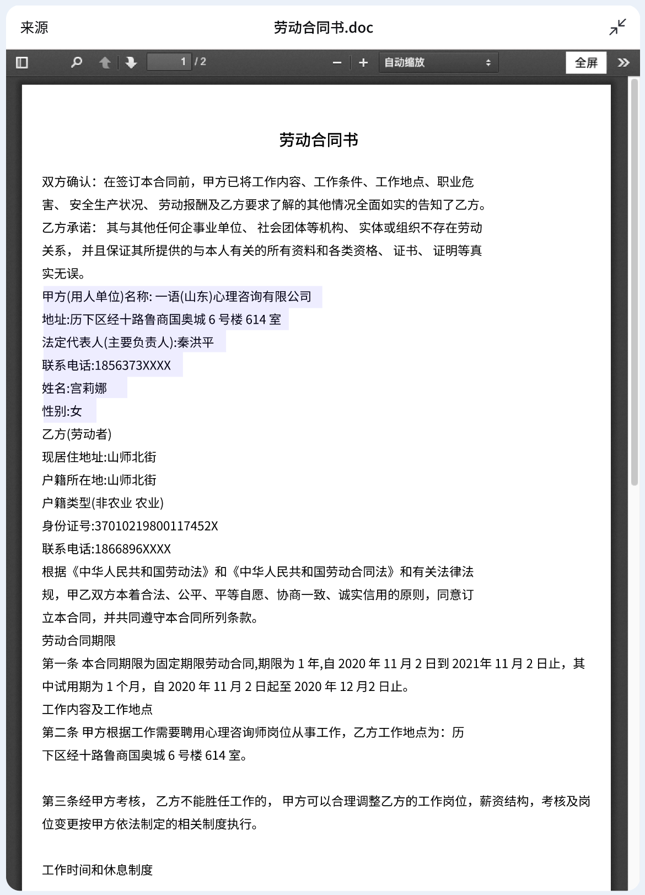

1. 判令被告立即向原告偿还借款本金人民币50,000,000元；
2. 判令被告向原告支付逾期利息（以50,000,000元为基数，按年利率6%，自2024年7月1日起计算至实际清偿之日止）；
3. 判令本案诉讼费用由被告承担。
检测到您的需求涉及多个任务，请选择一个任务继续：
我无法理解您的输入，您可以选择以下任务继续：
原告：广州农村商业银行股份有限公司黄埔支行
统一社会信用代码：1440101XXXXXXXXXXXXXXX
住所地：广东省广州市黄埔区XX路XX号
法定代表人：李明，职务：行长
委托诉讼代理人：张三，广东XX律师事务所律师
被告：王五
性别：男，民族：汉族
出生年月：1985年5月10日
身份证号：4401106198505l0XXXX
住所地：广东省广州市天河区XX路XX号
1. 判令被告立即向原告偿还借款本金人民币50,000,000元；
2. 判令被告向原告支付逾期利息（以50,000,000元为基数，按年利率6%，自2024年7月1日起计算至实际清偿之日止）；
3. 判令本案诉讼费用由被告承担。
被告王五辩称：对借款本金50,000,000元无异议，但主张已于2024年6月偿还部分本金500,000元，且利息计算方式存在争议，请求法院依法核实。
2024年1月1日，原告与被告王五签订《个人借款合同》（合同编号：GZNY20240101），约定原告向被告提供借款人民币50,000,000元，借款期限自2024年1月5日至2024年11月30日，年利率为6%，按月付息，到期一次性还本。
合同签订后，原告依约于2024年1月5日通过银行转账方式向被告指定账户（开户行：中国银行广州天河支行，账号：XXXXXXXXXXXXXXXX）发放了全部借款，有银行转账凭证为证。
被告王五于2024年6月15日偿还本金500,000元，有银行流水记录为证。
借款到期后，被告未能按约偿还剩余借款本金49,500,000元及相应利息，经原告多次催收未果。
1.《个人借款合同》原件；2. 银行转账凭证；. 银行流水记录；. 催收函及送达回执；. 双方当事人当庭陈述。上述证据经双方当事人质证，本院予以确认。
原告与被告签订的《个人借款合同》系双方真实意思表示，内容不违反法律、行政法规的强制性规定，应认定为合法有效。
根据《中华人民共和国民法典》第六百六十七条规定，借款合同是借款人向贷款人借款，到期返还借款并支付利息的合同。原告已按约发放借款，被告应按约定期限返还借款本金并支付利息。
根据《中华人民共和国民法典》第六百七十六条规定，借款人未按照约定的期限返还借款的，应当按照约定或者国家有关规定支付逾期利息。被告逾期未还款，应承担相应的逾期利息。
关于借款本金，被告已偿还500,000元，剩余本金为49,500,000元。关于利息计算，双方约定年利率6%，未超过法律规定的上限，本院予以支持。
一、被告王五于本判决生效之日起十日内向原告广州农村商业银行股份有限公司黄埔支行偿还借款本金人民币49,500,000元；
二、被告王五于本判决生效之日起十日内向原告广州农村商业银行股份有限公司黄埔支行支付逾期利息（以49,500,000元为基数，按年利率6%，自2024年7月1日起计算至实际清偿之日止）；
三、案件受理费291,800元，由被告王五负担。
如不服本判决，可在判决书送达之日起十五日内，向本院递交上诉状，并按对方当事人的人数提出副本，上诉于广东省高级人民法院。
如被告未按本判决指定的期间履行给付金钱义务，应当依照《中华人民共和国民事诉讼法》第二百六十条之规定，加倍支付迟延履行期间的债务利息。
审判长 张法官
审判员 李法官
审判员 王法官
二〇二五年一月十五日
书记员 赵书记
